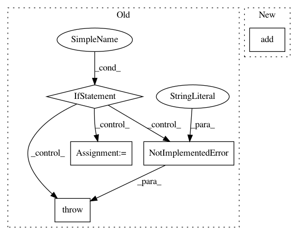

b0cd6a1df09c7157dea48265a5c21c3b7cc37399,softlearning/misc/nn.py,,feedforward_model,#Any#Any#Any#Any#Any#Any#,4
Before Change
name=None,
*args,
**kwargs):
if not isinstance(input_shapes[0], (list, tuple)):
raise NotImplementedError(
"TODO(hartikainen): feedforward_model currently expects a list of"
" shapes as an input. It might be possible that you passed in a"
" list/tuple of dimension objects. Those should be accepted"
" but have not yet been implemented.")
inputs = [
tf.keras.layers.Input(shape=input_shape)
for input_shape in input_shapes
]
if len(inputs) > 1:
out = tf.keras.layers.Concatenate(axis=-1)(inputs)
else:
out = inputs[0]
for units in hidden_layer_sizes:
out = tf.keras.layers.Dense(
units, *args, activation=activation, **kwargs)(out)
out = tf.keras.layers.Dense(
output_size, *args, activation=output_activation, **kwargs)(out)
After Change
**kwargs):
model = tf.keras.Sequential(name=name)
model.add(tf.keras.layers.Lambda(lambda x: tf.concat(x, axis=-1)))
for units in hidden_layer_sizes:
model.add(tf.keras.layers.Dense(
units, *args, activation=activation, **kwargs))
In pattern: SUPERPATTERN
Frequency: 3
Non-data size: 5
Instances
Project Name: rail-berkeley/softlearning
Commit Name: b0cd6a1df09c7157dea48265a5c21c3b7cc37399
Time: 2018-10-29
Author: hartikainen@berkeley.edu
File Name: softlearning/misc/nn.py
Class Name:
Method Name: feedforward_model
Project Name: tensorflow/transform
Commit Name: 319d76de1d740a0500b9bc321ddc40bf3c032f71
Time: 2021-01-26
Author: zoy@google.com
File Name: tensorflow_transform/tf_utils.py
Class Name:
Method Name: reduce_batch_count_mean_and_var
Project Name: snorkel-team/snorkel
Commit Name: da0dd1052decff8fe2fd6d46a49992a91d7f232f
Time: 2016-09-02
Author: stephenhbach@gmail.com
File Name: snorkel/annotations.py
Class Name: CandidateFeaturizer
Method Name: create